Build, lint e fronteiras
TypeScript/Vite e ESLint passaram. Auditor de toda a árvore: 0 P0 / 0 P1 / 25 P2 informativos pré-existentes. Alexandria: 209 hashes idênticos; backend/operador/contratos: 113 arquivos intactos; 26 caminhos preservados.
Este pacote reúne mudanças reais, comparações, ações verificadas e críticas que ainda exigem resposta. Marca, filme, método, famílias, serviço e Terminal são examinados como partes da mesma casa.
REVISÃO · implementação 9c54496; gates e retestes concluídos
Estado auditável. Branch wave/nivar-g2-dream-build; HEAD de abertura 67f3074bd5197e2f18b9ea084501acf989c024e3. O identificador d9c34c78c26eb85ff9ba981bde9ebcc617f50ff7 do brief é um tree hash. Build integrado, auditoria e retestes passaram. Implementação registrada em fe0c9e6 e 9c54496, nessa ordem. O commit documental do pacote será posterior. Não há merge, deploy ou aprovação final implícita.
Gates integrados, gravações amostradas e retestes de navegação sustentam as conclusões abaixo. Nenhum deles implica aprovação final, entrega humana ou dados de mercado ao vivo.
TypeScript/Vite e ESLint passaram. Auditor de toda a árvore: 0 P0 / 0 P1 / 25 P2 informativos pré-existentes. Alexandria: 209 hashes idênticos; backend/operador/contratos: 113 arquivos intactos; 26 caminhos preservados.
No passe de loading: 8.110.580 → 3.308.245 B. O build integrado final tem entry de 3.310,89 kB; gzip 1.014,73 kB. O bundle residual continua grande.
Portal, Software e Terminal × 390/430/768/1024/1440/1920 × claro/escuro: zero overflow horizontal e imagens visíveis quebradas. Isso não prova todas as imagens ou toda a acessibilidade.
Diógenes mantém a pose ampla aprovada. O filme faz a mesma evidência mudar de representação; o caderno conserva a escolha e oferece gestos que mudam a leitura.
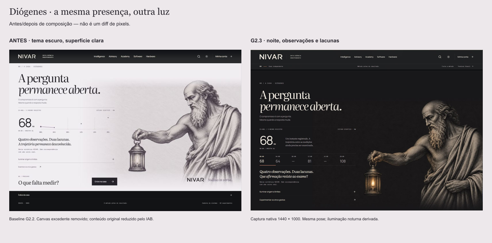
São gravações amostradas de UI real. Os MP4s preservam os intervalos registrados entre screenshots, sem inventar quadros. Não são captura contínua 30/60 fps. Só padding uniforme foi removido, com um pixel de compatibilidade H.264 onde necessário. Timing, crop, revisão e limites · Hashes.
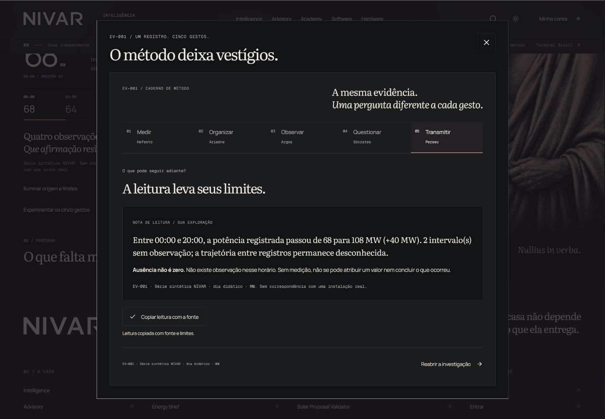
O timestamp deixou de cruzar o bracket. Numa segunda iteração, a fonte sai antes da pergunta aparecer. O crítico inspecionou os pixels dos takes finais desktop/mobile e confirmou as correções nos quadros amostrados.
O reset do caderno também foi corrigido: escolher 08:00 ausente em Diógenes abre a mesma lacuna no método. Reteste a CSS 390 px confirmou a seleção; Escape retornou foco ao opener real.
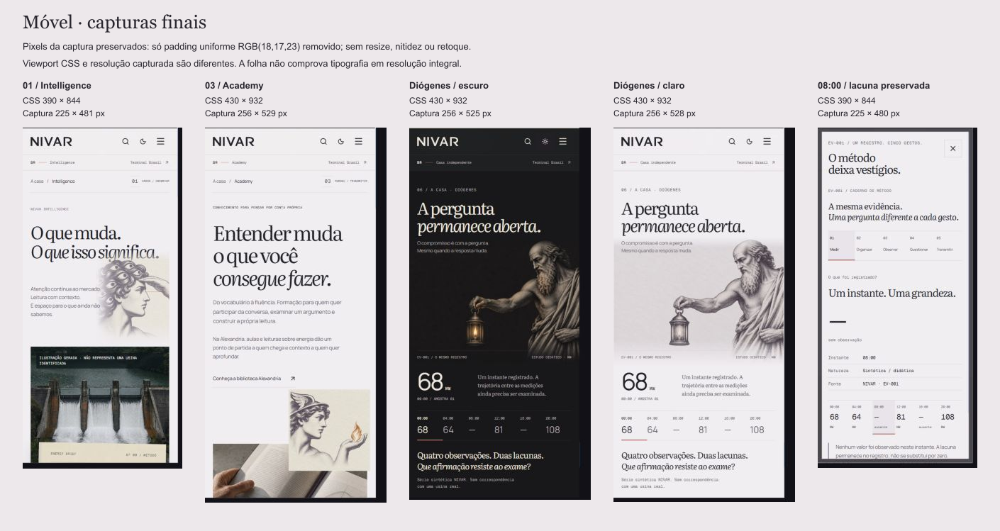
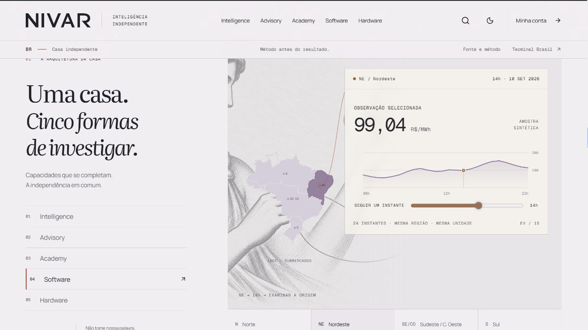
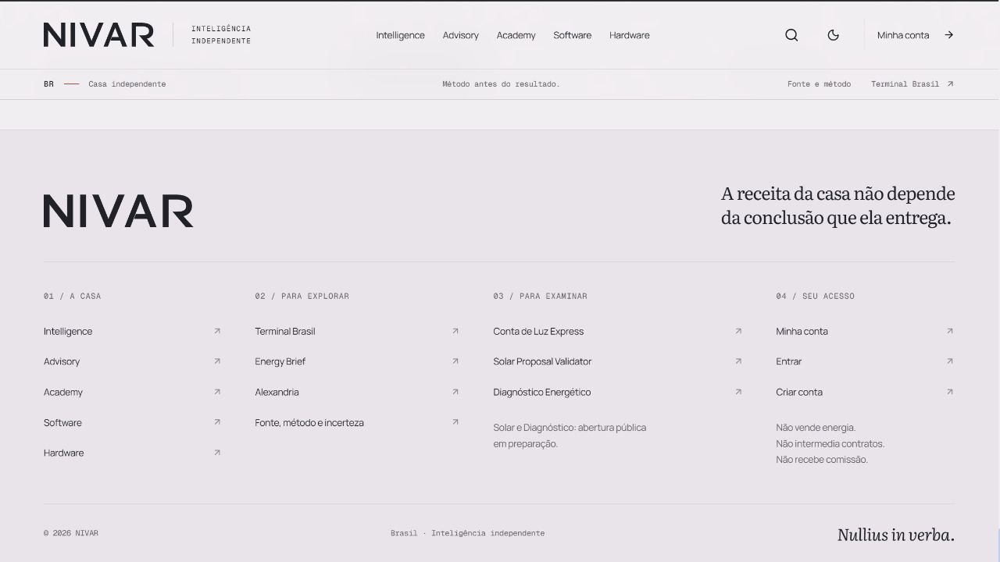
Interval optical venceu a comparação real por conservar o equilíbrio entre casa editorial e instrumento. A assinatura usa contornos de uma cor; os patronos mantêm a presença narrativa.
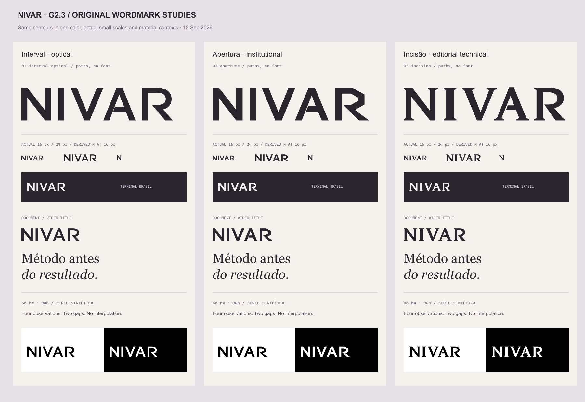
viewBox="0 0 333 80", proporção 4,1625. O A tem abertura ampliada quando a altura é ≤18 CSS px; de 19 px em diante usa o contorno principal. Os pequenos identificadores de família são índices tipográficos.
Os SVGs exportados são entregáveis. A aplicação usa seus contornos inline em Brand.tsx. O favicon SVG entra pelo hook useNivarFavicon no shell e na rota completa do Terminal. O hook remove apenas seu próprio link ao sair; os PNGs são exportações preparadas. O percurso real Academy → Alexandria restaurou seus três favicons originais; o novo SVG permanece no Terminal.
Blender trabalhou os contornos exatos em grafite/mineral com incisão de 0,24 mm. O primeiro relevo ficou excessivo; a correção usou corte raso e luz rasante. O estudo ficou legível como material, mas a assinatura plana venceu para a página.
Os bitmaps da incisão não foram implantados no runtime. A cena, scripts, comparação e derivados continuam disponíveis para revisão e reuso futuro.
Patronos, paisagem e linguagem permanecem. Índices identificam a família nas interfaces pequenas; os personagens carregam a composição narrativa.
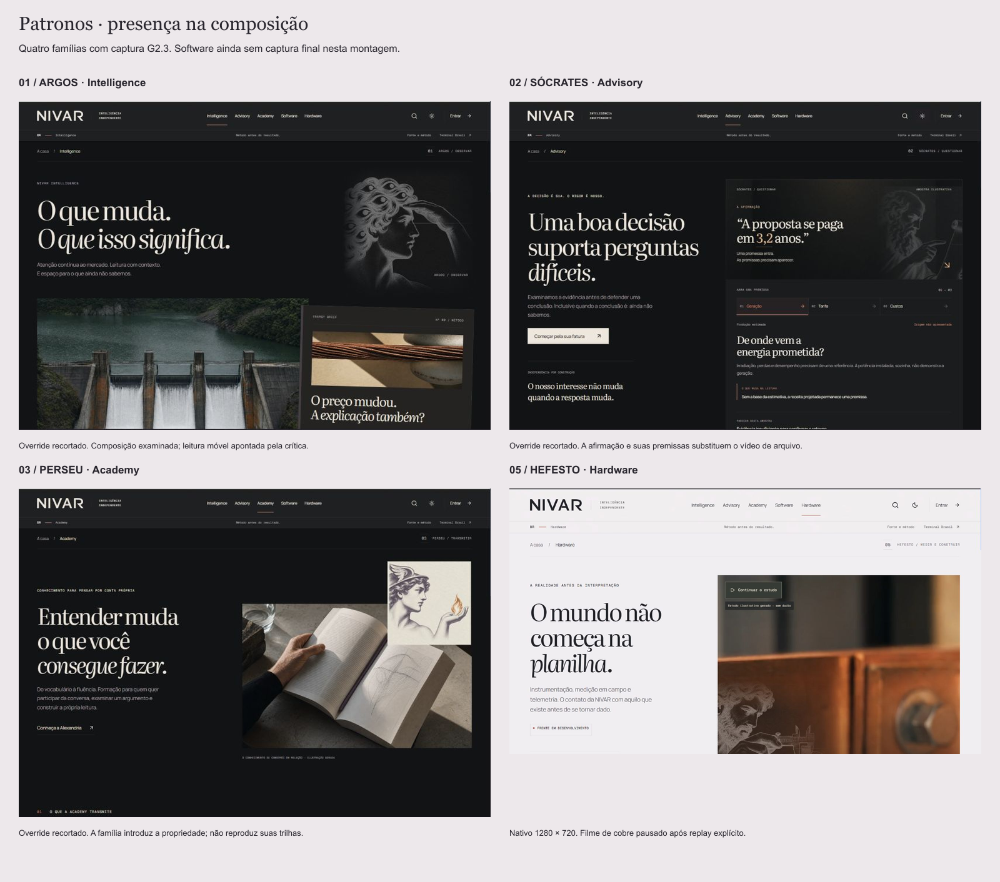
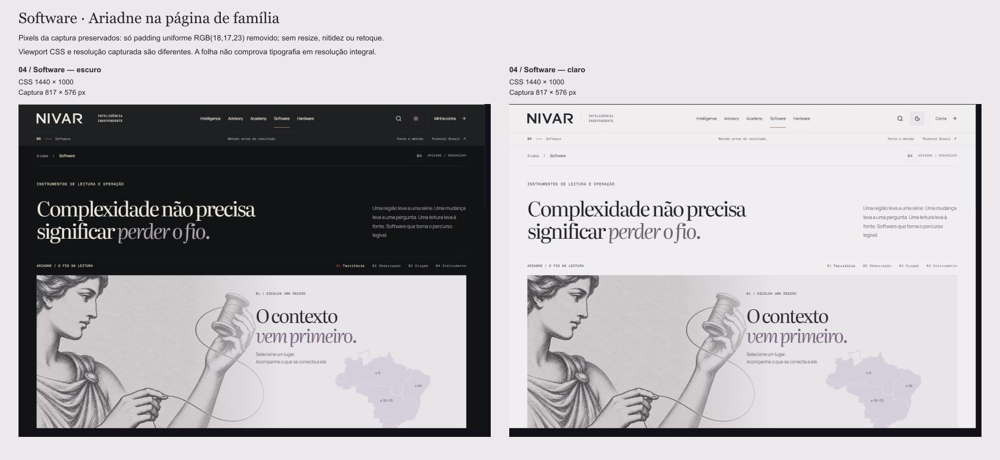
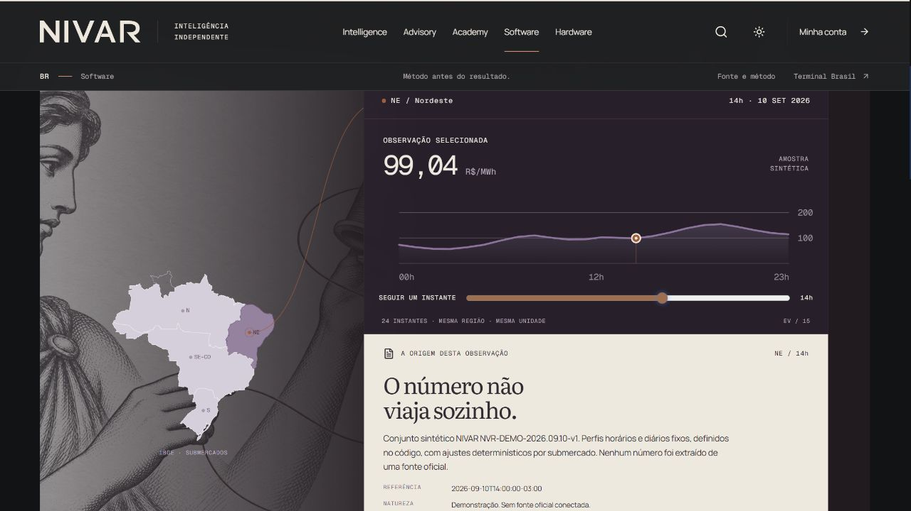
Academy explica sua filosofia e aponta uma entrada para Alexandria, sem duplicar currículo ou trilhas. Advisory examina geração, tarifa e custos de uma afirmação.
O link real de Academy abriu a Alexandria original, sem shell G2 e com os três favicons originais. Seus 209 arquivos conservam os hashes de baseline. O smoke não percorreu todo o currículo.
As três ofertas mantêm os URLs e contratos existentes. Solar e Diagnóstico continuam em preparação. O intake explica o serviço sem simular seu lançamento ou uma entrega humana.
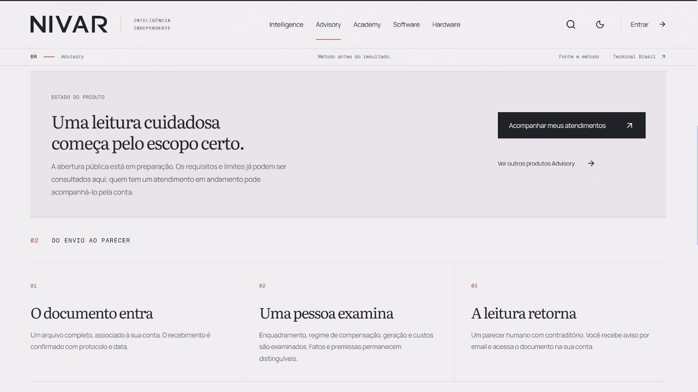
MIME inválido foi rejeitado. Diagnóstico focou o setor ausente, transportou escolhas à revisão e manteve texto ao editar. Trocar de caso limpou a mensagem do caso anterior; nenhum POST de escopo ou mensagem foi feito.
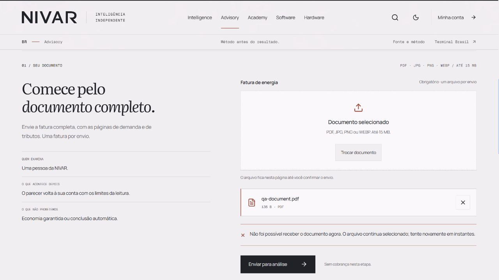
Os hosts 5188/5189 interceptam todo /api com registros sintéticos. Os passes inicial e final enviaram apenas o PDF de QA ao harness. Nenhum documento real, atendimento, mensagem, notificação, pagamento ou SLA foi validado. Captura histórica do defeito.
Comparação, recorte, representação e fonte usam um contexto comum. URL, CSV e análises nomeadas preservam escolhas. O dado continua demonstrativo e determinístico.
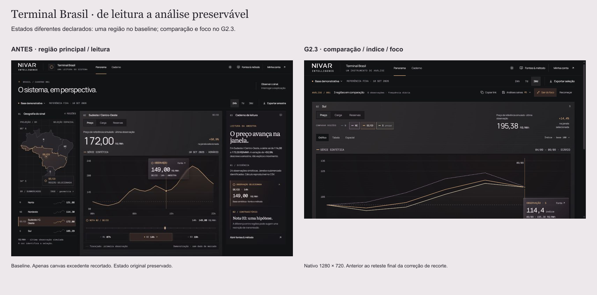
Sul, 08/09: 200,78 R$/MWh. Iniciar o recorte em 07/09 conserva a leitura. Iniciar em 09/09 seleciona esse limite, anuncia a mudança e desabilita as notas excluídas.
7d ↔ 30d conserva 08/09/200,78. Sul + SE/CO em índice 100 mantém a data em tabela, espacial e fonte. Oito testes e a jornada real confirmam a correção.
Passos 00–05 · Incluída · Excluída · Fonte
Inventário e jornada · Crítica original · Pesquisa e decisões
16 novos arquivos públicos somam 624.770 B neste snapshot. Isso inclui candidatos e pesquisa não usados em runtime; presença na pasta não equivale a integração.
Seedance 2.5 partiu do job de imagem original 2a9dd2c3-94bf-4e8e-9447-775d46459423. O filme 5e1eeae5-970f-40d9-93eb-913cb6b66777 preserva a junta nos quadros inspecionados.
H.264 960 × 540, 145 quadros, 6,042 s, sem áudio, 225.981 B. O fim difere do início: hard-loop rejeitado. No produto, play, fim, replay e pausa foram exercitados, e a fonte inicial estava ausente. O reteste bloqueou só o MP4 com 503: mensagem humana, poster preservado, pausa e retry. Fallback nativo.
| Material | Decisão | Registro |
|---|---|---|
| Interval optical | Contornos autorais da silhueta existente. SVG inline e favicon SVG pelo hook de rota; PNGs e demais exportações preparados. | Geometria / hashes |
| Incisão Blender | Geometria, shaders e luz locais; sem estoque ou objeto fictício. Comparação retida, bitmap não montado na página. | Estudo material |
| Diógenes noturno | ImageGen nativo a partir da pose aprovada. Original novo retido, WebPs responsivos; versão clara G2.2 preservada. Intenção do prompt reconstruída e identificada no manifesto; não é uma transcrição integral. | Original de geração |
| Itaipu / patronos / fontes | Patrimônio já aprovado, com procedência anterior preservada. Fotografia histórica não certifica a série didática. Nenhuma nova licença de fonte. | História e direitos |
O cobre e Diógenes são ilustrações geradas; não constituem registro de instalação ou evidência factual. A revisão do vídeo usa quadros extraídos e métricas; não garante ausência de todo artefato transitório. Manifesto consolidado.
Os relatos independentes registram versões anteriores. O reteste final acrescenta prova específica, sem reescrever o achado histórico como aprovação retroativa.
| Achado | Resposta e prova | Estado |
|---|---|---|
| Timestamp sobre o bracket; fonte/pergunta sobrepostas | Dois ajustes de transição. Crítico inspecionou os pixels dos takes finais desktop/mobile; metadados e quadros retidos. | Corrigidos nos quadros finais amostrados |
| Seleção de Diógenes se perde no caderno | 08:00 ausente preservado em CSS 390. Escape retorna ao opener real. | Reteste do principal concluído |
| Recorte troca a data da nota | Identidade da série completa; oito testes; inclusão/exclusão, 7d/30d, tabela/espacial/fonte exercitados. | Reteste do principal concluído |
| Upload inglês / filename repetido | Seletor português, nome único, 503 honesto, arquivo mantido, remover/foco/reseleção funcionam. | Reteste nativo concluído |
| Microtipografia e integração de patronos | Novos renders móveis e Software disponíveis. Pequenas informações e equilíbrio de imagem/texto continuam questões de julgamento visual. | Fraqueza de craft registrada |
| Papel final ainda não é entrada direta no instrumento | Crítico propõe reter EV-001 e iniciar o caderno pelo mesmo objeto. O preço do bloco seguinte declara ser outra amostra. | Oportunidade de direção preservada |
Isolamento e rotas. Alexandria manteve 209 hashes e abriu pelo link real de Academy com identidade original. O smoke carregou /us, /nest e /operador; fallback resolveu, a fila existente ficou somente em leitura e não houve erro runtime na aba. Registro.
prefers-reduced-motion não estava exposta: só viewport/visibilidade. Guardas inspecionados e pausa manual exercitada; preferência do sistema não validada.9c544965210fe6da1943ef339ec4e08f7c9263d7; o commit documental sucede este snapshot. Nenhum merge, deploy ou aceite do proprietário é declarado.Handoff e conferência das entregas · Retestes finais · Rotas exatas · Ativos e direitos · Arquivos portáteis das gravações
{kind=link}
{kind=link}
{kind=link}
{kind=link}
{kind=link}
{kind=link}
{kind=link}
{kind=link}
{kind=link}
{kind=link}
{kind=link}
{kind=link}
{kind=link}
{kind=link}
{kind=link}
{kind=link}
{kind=link}
{kind=link}
{kind=link}
{kind=link}
{kind=link}
{kind=link}